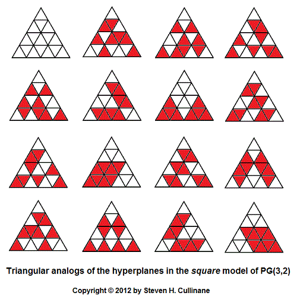
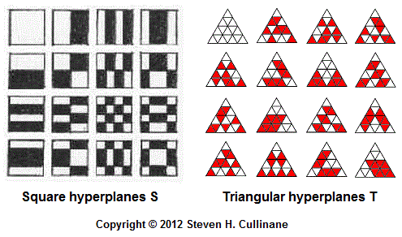

Keys for search: "triangle
tiling," "n2 congruent triangles [i.e., n
2 ]," Cullinane, Soifer, Beeson
Triangles
Are Square
by
Steven H. Cullinane

A triangle-decomposition
result from 1984:
A followup from 1985:
Problem— Devise a test
for "naturality" of such mappings
and apply it to the trial mappings above.
Update of July 16, 2012:
Another
approach to the
square-to-triangle mapping problem —

For
the square model referred to in the above picture, see (for instance)
Picturing
the Smallest Projective 3-Space,
The
Relativity Problem in Finite Geometry, and
Symmetry
of Walsh Functions.
Coordinates for the 16 points in the triangular arrays
of the corresponding affine space may
be deduced from
the patterns in the projective-hyperplanes array above.
This solves the inverse problem of mapping,
in a natural way, the triangular array of 16 points
to the square array of 16 points.
Note
that the square model's 15 hyperplanes S
and the triangular model's 15 hyperplanes T —

— share the following vector-space structure —
|
0 |
c |
d |
c
+ d |
|
a |
a + c |
a + d |
a + c + d |
|
b |
b + c |
b + d |
b + c + d |
| a
+ b |
a + b + c |
a + b + d |
a + b +
c + d |
(This vector-space a
b c d diagram is from
Chapter 11 of Sphere
Packings, Lattices
and Groups ,
by John Horton Conway and
N. J. A. Sloane, first published by
Springer
in 1988.)
Update
of
March 26, 2012:
For related material, see
Beeson, Michael,
Triangle Tiling
, series of preprints, 2012
Soifer, Alexander,
How Does One Cut a Triangle?,
second edition, Springer, 2009
As of March 26, 2012, neither Soifer nor Beeson have referenced the
1985
Monthly
letter.
Page created January 16,
2012.
{kind=link}
{kind=link}